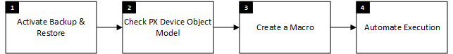
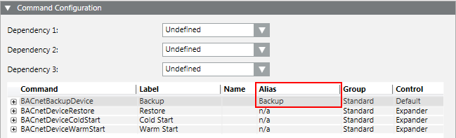
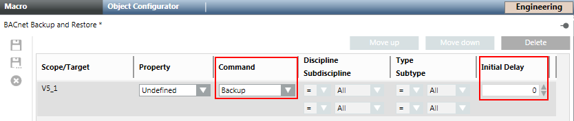
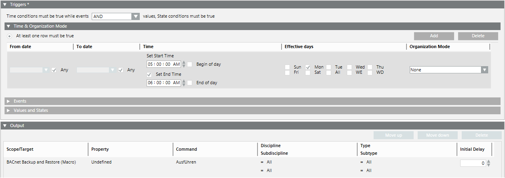

Create BACnet Backup Scheduled by Time
Scenario: You want to configure Desigo automation stations to regularly save the BACnet data at the same time. The workflow guides you through the required steps.
Reference: General information on Desigo automation stations is available at Desigo Automation.
Flowchart:

Prerequisites:
- System Manager is in Engineering mode.
- In System Browser, select Management View.
Steps:
1 – Activate Automation Stations for Backup & Restore
- Select Project > Field Networks > [Network name] > Hardware > [Automation station] of the corresponding automation station.
- Select the BACnet tab.
- Open the Backup/Restore Information expander and clear the Enable backups check box.
- If cleared: BACnet Backup is backed up as scheduled.
If selected: BACnet Backup is backed up as per the backup rate (not used for this procedure). - Enter the data for the BACnet backup properties:
- Reinitialize password: Password for the automation station.
- Confirm password: Confirm the password for the automation station.
- Repeat Steps 2 through 5 for all automation stations.
2 – Check the Desigo Device Object Model
- The BACnet Backup settings for each automation station are done.
- Select Project > Field Networks > [Network name] > Hardware > [Automation station] of the corresponding automation station.
NOTE: Apply this workflow to all automation station types. - Click the Object Configurator tab.
- Open the Main expander and double-click the text Object model.
- In System Browser, the Object Model is selected.
- Click the Models & Functions tab.
- Open the Properties expander and select the System_Status property.
- In the Command Configuration expander, check the BACnetBackupDevice entry. Enter the Backup name in the Alias column. If not entered, select the alias name from the drop-down list.

3 – Creating a Macro
- The Object Model is checked for the correct alias name.
- In System Browser, select Application View.
- Select Applications > Logics > Macros and select the Macro tab.
- Click Create
 and select New Macro.
and select New Macro. - In the New Object dialog box, enter a name and description.
- Click OK.
- The new macro appears in the Macro tab.
- In System Browser, select Management View.
- Select Project > Field Networks > [Network name] > Hardware > [Automation station] of the corresponding automation station.
- Drag the automation station to the Macro configuration area.
- Repeat Step 8 for each automation station.
- Define the initial delay in the column Initial Delay (in seconds) for each automation station.
- 1. automation station = 0 seconds
- 2. automation station = 300 seconds
- 3. automation station = 600 seconds, and so on.
NOTE: This cascade procedure avoids an overload of network traffic. - Click Save
 .
.
- The macro is defined and all automation station are assigned.

4 – Automatically Execute
You can create an automated backup of BACnet automation station data using the functions Macro and Reaction Editor.
- Select Applications > Logics > Reactions.
- The Reaction Editor opens.
- In the Triggers tab, select Time & Organization Mode expander and click Add.
- Click anywhere on the row.
- The dialog box to set the execution time displays.
- Set the dates, days and time to execute the macro.
- In System Browser, select Applications > Logics > Macros > [MyMacro BACnet Backup] and drag the object to the Output expander.
- Click Save As .
- Enter a name and description.
- Click OK.
